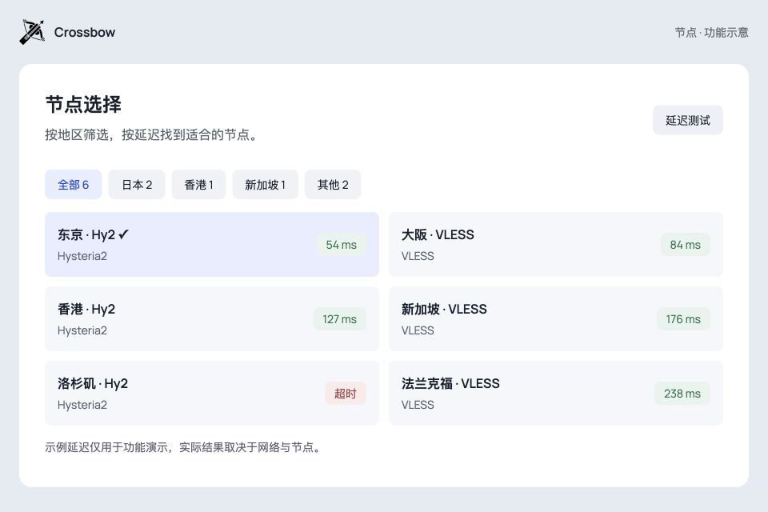
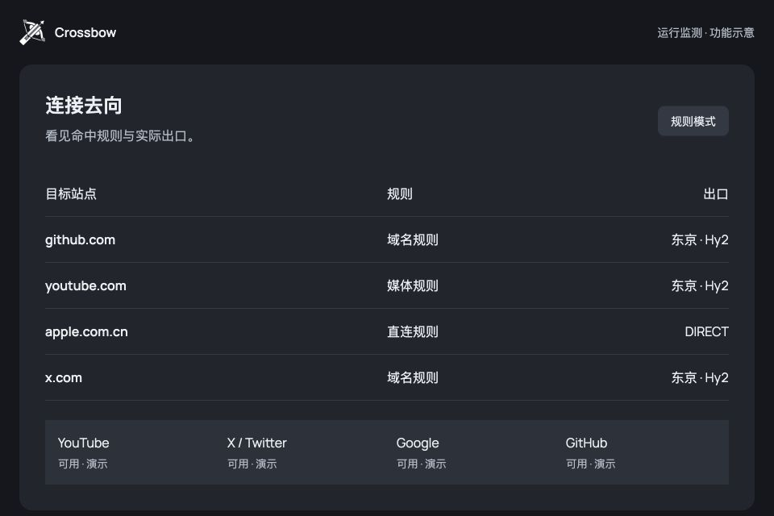
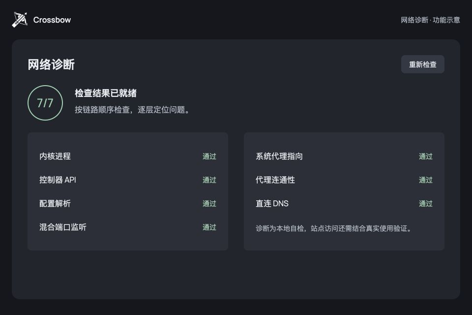
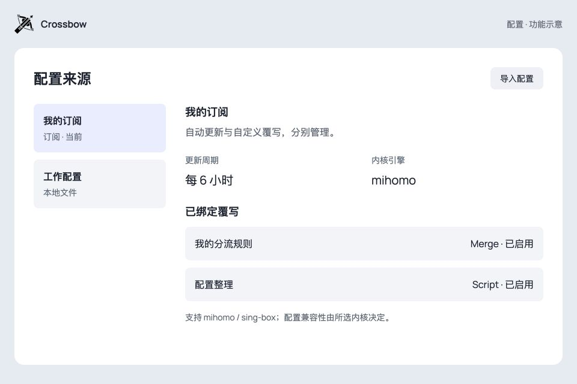

系统代理
让遵循系统代理设置的应用，经由 Crossbow 连接。适合浏览器等常用应用。
Crossbow 是 macOS 与 Windows 的开源代理客户端。把订阅、节点、系统代理与 TUN 放在一起，也把连接状态留在眼前。
下载桌面版当前出口
东京 · Hy2 54 ms
试试切换接管方式
让支持代理的应用先行。
应用读取系统代理设置后，经由 Crossbow 连接。
当前演示：系统代理
功能交互示意，采用演示数据，不修改本机网络设置。
搜索名称或协议，按地区收拢节点，用延迟排序找到可用的选择。
逐项测试，或一次检查整组节点。测速中的状态、返回的延迟和超时结果，都留在原位。

让遵循系统代理设置的应用，经由 Crossbow 连接。适合浏览器等常用应用。
使用虚拟网卡接管系统流量，覆盖不读取系统代理的应用。首次使用需完成相应授权或服务配置。
两种方式共用本应用内核。使用其他代理或 VPN 时，请避免路由与接管冲突。
从目标站点到命中规则，从内核日志到网络诊断。找线索时，有具体信息可看。

查看目标、规则、出口和流量；测试 YouTube、X、Google、GitHub 的站点响应。

结合日志与逐项自检排查。诊断详情可以脱敏复制，反馈问题更有依据。
站点响应与延迟是排查线索，不代表所有应用或网站都一定可用。

导入订阅链接或本地文件，设置更新周期。用覆写管理自己的修改。
Merge 合并片段，Script 处理配置。按需求选择 mihomo 或 sing-box，协议与配置兼容性由所选内核决定。
还有问题？
在 GitHub 交流
不提供。Crossbow 是开源代理客户端，需要你自行准备合法、可用的订阅或配置。下载客户端不包含节点服务。
可以。Crossbow 提供独立开关，两者可共用本应用的内核。系统代理依赖应用读取代理设置，TUN 使用虚拟网卡接管流量；实际行为还取决于规则与网络环境。使用其他代理或 VPN 时应避免冲突。
官方 Release 提供 macOS Apple Silicon 和 Windows x64 安装包。iOS 正在开发验证，尚无公开的 App Store 或 TestFlight 下载入口。请以 Release 中实际提供的安装包为准。
不一定。节点延迟、站点响应与浏览器实际访问是不同检查。你可以结合连接列表、日志、站点检测和网络诊断排查，再用常用应用验证。
桌面端可选择这两种内核，但协议、规则和配置能力以对应内核为准。切换内核不代表任意配置都能直接兼容，请先验证已有配置。
TUN 涉及虚拟网卡与系统路由。macOS 首次使用需要管理员授权，Windows 通过配套服务处理相应操作。请按应用提示完成配置，避免同时运行多个 TUN。
在应用设置中检查更新，或访问官方 GitHub Releases。反馈时附上版本、操作系统和脱敏后的诊断信息；不要公开订阅链接、token 或服务器密码。
下载 Crossbow 桌面版。
安装包、版本说明和 SHA256 校验文件，统一在官方 GitHub Releases 提供。
开源客户端，不包含节点或订阅服务。请遵守当地法律与所用服务的条款。